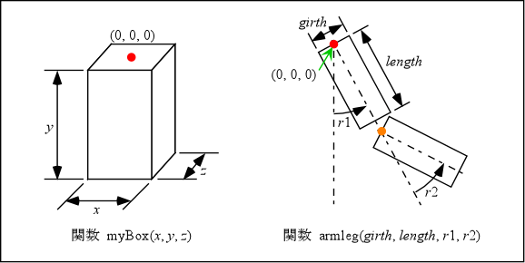
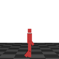

歩行ロボットの実験
地面の上をロボットが歩いているようなアニメーションを表示するプログラムを作ってみましょう． これまでに作ったプログラムをベースを改造するのが手っ取り早いと思いますが， うまく行かなければ下の手順を参考にしてください． このプログラムは結構長いので， 時間が無ければ Web ページからコピーアンドペーストして構いません． ソースファイル名は prog7.c としてください．
下のプログラムは地面の上に立っている 四角い箱でできたロボットのような物体（箱男）を静止画で表示します． これが地面の上を歩き回るようにしてください． 歩き方は自由ですが， できるだけ自然に歩いているように見えるようにしてください．
#include <stdlib.h>
#include <GL/glut.h>
#define STEPCYCLE 400 /* 手足のひと振りに要する時のフレーム数 */
#define WALKCYCLE 4000 /* ステージ上を一周するのに要するフレーム数 */
/*
* 直方体を描く
*/
static void myBox(double x, double y, double z)
{
GLdouble hx = x * 0.5, hz = z * 0.5;
GLdouble vertex[][3] = {
{ -hx, -y, -hz },
{ hx, -y, -hz },
{ hx, 0.0, -hz },
{ -hx, 0.0, -hz },
{ -hx, -y, hz },
{ hx, -y, hz },
{ hx, 0.0, hz },
{ -hx, 0.0, hz }
};
const static int face[][4] = {
{ 0, 1, 2, 3 },
{ 1, 5, 6, 2 },
{ 5, 4, 7, 6 },
{ 4, 0, 3, 7 },
{ 4, 5, 1, 0 },
{ 3, 2, 6, 7 }
};
const static GLdouble normal[][3] = {
{ 0.0, 0.0,-1.0 },
{ 1.0, 0.0, 0.0 },
{ 0.0, 0.0, 1.0 },
{-1.0, 0.0, 0.0 },
{ 0.0,-1.0, 0.0 },
{ 0.0, 1.0, 0.0 }
};
const static GLfloat red[] = { 0.8, 0.2, 0.2, 1.0 };
int i, j;
/* 材質を設定する */
glMaterialfv(GL_FRONT, GL_DIFFUSE, red);
glBegin(GL_QUADS);
for (j = 0; j < 6; ++j) {
glNormal3dv(normal[j]);
for (i = 4; --i >= 0;) {
glVertex3dv(vertex[face[j][i]]);
}
}
glEnd();
}
/*
* 腕／足
*/
static void armleg(double girth, double length, double r1, double r2)
{
glRotated(r1, 1.0, 0.0, 0.0);
myBox(girth, length, girth);
glTranslated(0.0, -0.05 - length, 0.0);
glRotated(r2, 1.0, 0.0, 0.0);
myBox(girth, length, girth);
}
/*
* 地面を描く
*/
static void myGround(double height)
{
const static GLfloat ground[][4] = {
{ 0.6, 0.6, 0.6, 1.0 },
{ 0.3, 0.3, 0.3, 1.0 }
};
int i, j;
glBegin(GL_QUADS);
glNormal3d(0.0, 1.0, 0.0);
for (j = -5; j <= 5; ++j) {
for (i = -5; i < 5; ++i) {
glMaterialfv(GL_FRONT, GL_DIFFUSE, ground[(i + j) & 1]);
glVertex3d((GLdouble)i, height, (GLdouble)j);
glVertex3d((GLdouble)i, height, (GLdouble)(j + 1));
glVertex3d((GLdouble)(i + 1), height, (GLdouble)(j + 1));
glVertex3d((GLdouble)(i + 1), height, (GLdouble)j);
}
}
glEnd();
}
/*
* 画面表示
*/
static void display(void)
{
const static GLfloat lightpos[] = { 3.0, 4.0, 5.0, 1.0 }; /* 光源の位置 */
static int frame = 0; /* フレーム数 */
/* STEPCYCLE に指定した枚数のフレームを描画する間に 0→1 に変化 */
double t = (frame % STEPCYCLE) / (double)STEPCYCLE;
/* WALKCYCLE に指定した枚数のフレームを描画する間に 0→1 に変化 */
double s = (frame % WALKCYCLE) / (double)WALKCYCLE;
/*
* 以下の変数に値を設定する
*/
double ll1 = 0.0; /* 箱男の左足の股関節の角度 */
double ll2 = 0.0; /* 箱男の左足の膝関節の角度 */
double rl1 = 0.0; /* 箱男の右足の股関節の角度 */
double rl2 = 0.0; /* 箱男の右足の膝関節の角度 */
double la1 = 0.0; /* 箱男の左腕の肩関節の角度 */
double la2 = 0.0; /* 箱男の左腕の肘関節の角度 */
double ra1 = 0.0; /* 箱男の右腕の肩関節の角度 */
double ra2 = 0.0; /* 箱男の右腕の肘関節の角度 */
double px = 0.0, pz = 0.0; /* 箱男の位置 */
double r = 0.0; /* 箱男の向き */
double h = 0.0; /* 箱男の高さ */
/* フレーム数（画面表示を行った回数）をカウントする */
++frame;
/* 画面クリア */
glClear(GL_COLOR_BUFFER_BIT | GL_DEPTH_BUFFER_BIT);
/* モデルビュー変換行列の初期化 */
glLoadIdentity();
/* 光源の位置を設定 */
glLightfv(GL_LIGHT0, GL_POSITION, lightpos);
/* 視点の移動（物体の方を奥に移す）*/
glTranslated(0.0, 0.0, -10.0);
/* シーンの描画 */
/* 地面 */
myGround(-1.8);
/* 箱男の位置と方向 */
glTranslated(px, h, pz);
glRotated(r, 0.0, 1.0, 0.0);
/* 頭 */
myBox(0.20, 0.25, 0.22);
/* 胴 */
glTranslated(0.0, -0.3, 0.0);
myBox(0.4, 0.6, 0.3);
/* 左足 */
glPushMatrix();
glTranslated(0.1, -0.65, 0.0);
armleg(0.2, 0.4, ll1, ll2);
glPopMatrix();
/* 右足 */
glPushMatrix();
glTranslated(-0.1, -0.65, 0.0);
armleg(0.2, 0.4, rl1, rl2);
glPopMatrix();
/* 左腕 */
glPushMatrix();
glTranslated(0.28, 0.0, 0.0);
armleg(0.16, 0.4, la1, la2);
glPopMatrix();
/* 右腕 */
glPushMatrix();
glTranslated(-0.28, 0.0, 0.0);
armleg(0.16, 0.4, ra1, ra2);
glPopMatrix();
glFlush();
}
static void resize(int w, int h)
{
/* ウィンドウ全体をビューポートにする */
glViewport(0, 0, w, h);
/* 透視変換行列の指定 */
glMatrixMode(GL_PROJECTION);
/* 透視変換行列の初期化 */
glLoadIdentity();
gluPerspective(30.0, (double)w / (double)h, 1.0, 100.0);
/* モデルビュー変換行列の指定 */
glMatrixMode(GL_MODELVIEW);
}
static void keyboard(unsigned char key, int x, int y)
{
/* ESC か q をタイプしたら終了 */
if (key == '\033' || key == 'q') {
exit(0);
}
}
static void init(void)
{
/* 初期設定 */
glClearColor(1.0, 1.0, 1.0, 1.0);
glEnable(GL_DEPTH_TEST);
glEnable(GL_CULL_FACE);
glEnable(GL_LIGHTING);
glEnable(GL_LIGHT0);
}
int main(int argc, char *argv[])
{
glutInit(&argc, argv);
glutInitDisplayMode(GLUT_RGBA | GLUT_DEPTH);
glutCreateWindow(argv[0]);
glutDisplayFunc(display);
glutReshapeFunc(resize);
glutKeyboardFunc(keyboard);
init();
glutMainLoop();
return 0;
}
このプログラムでは，箱を描く関数 myBox() と，その箱を組み合わせて腕や足を描く関数 armleg() を定義しており，それらを使って箱男を描いています． 後者の armleg() の第２・第３引数の r1, r2 を時間とともに変化させれば，腕や足を振るような動作が表現できます．


動作の開始や停止は， マウスのボタンを使ってコントロールするようにしてください．
- マウスの左ボタン
- 歩行開始
- マウスの中ボタン
- 歩行停止
- マウスの右ボタン
- 一歩だけ歩く
動きの作り方については，以下を参考にしてください．
- 関数 myBox() の３つの引数 x, y, z は，それぞれ箱の幅， 箱の高さ，箱の奥行きを指定します． またこの箱の原点は，箱の上面の中心にあります．
- 関数 armleg() は関数 display() 内で，右腕，右足，左腕，左足の４つの部分を表示するのに使用しており， 関節の角度はそれぞれ ra1 と ra2，rl1 と rl2，la1 と la2，ll1 と ll2 という変数で制御しています．
- 関数 display() 内では，これらの変数を armleg() の引数 r1, r2 に与えています．この単位は度で指定します． これらを時間の進行に伴って周期的に変化させれば， 腕や足を振ることができます． 代表的な周期関数には三角関数 (sin, cos) があります．
- 箱男の現在位置は display() の中の px および pz の二つの変数で設定しています．この値を変更すれば， 箱男の位置を変えることができます． また箱男の向きは r で設定しています．
- 変数 t および s はアニメーションを行うことによりフレーム（１回分の画像表示）数に伴って 0→1 に周期的に変化するようになります． これを時間として使って構いません．
- もちろん，箱男の歩みは滑らかに行われるようにしてください． また画面のちらつきも抑制するようにしてください．
なお，これはあくまで「一例」に過ぎません． 自分の思う方法で歩き方を考えてくれれば結構です． ただし，一応は歩いているように見えるようにしてください． スキップしているというのも可．